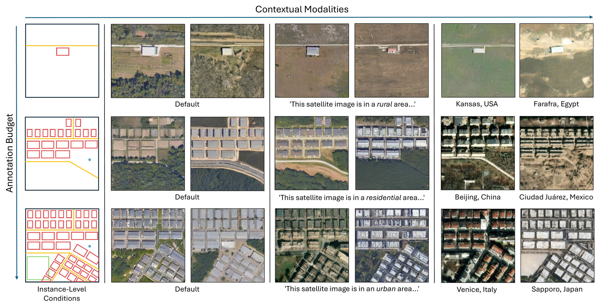
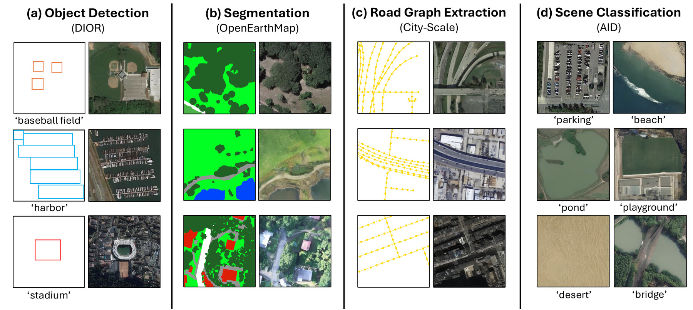
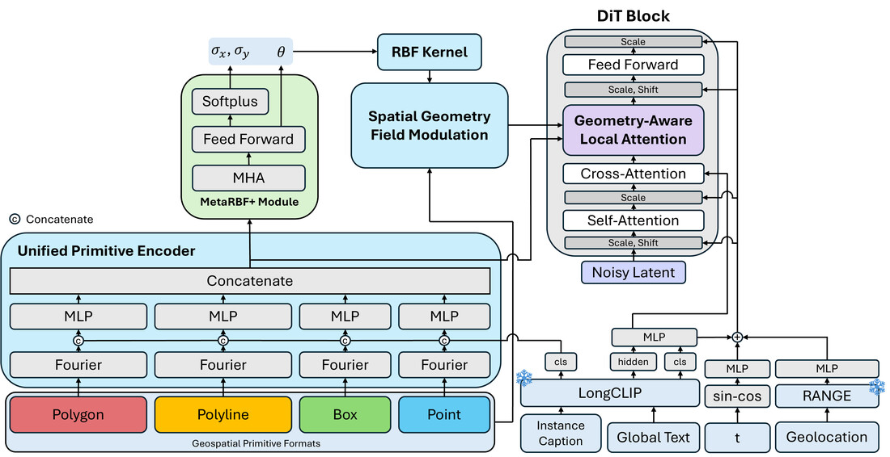
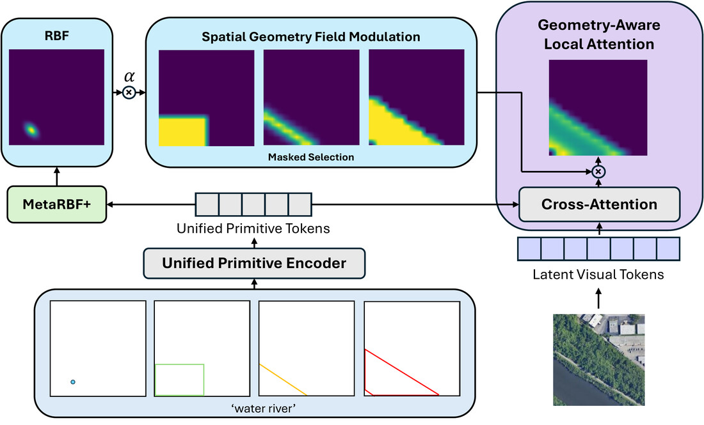

Generative models have achieved remarkable progress, yet applying them to satellite imagery remains challenging. Unlike natural imagery, satellite scenes are structured by spatially complex and semantically distinct geometries. Prior work addresses this complexity by adapting natural image frameworks using dense rasters or sparse prompts, trading off annotation cost and fidelity while breaking compatibility with vector primitives commonly used to represent geographic information. We introduce TerraDiT-Ω, a unified spatial control framework that generates satellite imagery directly from any native geospatial primitive. By jointly leveraging precise annotations (polygons, polylines) and coarser ones (bounding boxes, points), the model supports controllable layouts across varying annotation budgets, broadening applicability to design tasks such as urban planning while remaining naturally compatible with end-to-end GeoAI workflows. To effectively leverage these primitives during generation, we propose Geometry-Aware Local Attention, a conditioning mechanism that injects explicit geometric cues into the attention space. Across all conditioning formats, our approach consistently outperforms both dense-control and sparse-control baselines. Furthermore, the flexibility of using primitives enables controllable synthetic data augmentation for multiple remote sensing tasks where labeled scenes are costly to acquire. Using a single generative model rather than task-specific pipelines, we improve performance on land-cover segmentation, object detection, road graph extraction, and scene classification.

Annotation complexity increases top to bottom; contextual modalities (text, geolocation) are added left to right. Polygons = building, polylines = road, boxes = recreational, points = trees.

TerraDiT-Ω synthetic samples for four downstream tasks: (a) DIOR for object detection, (b) OpenEarthMap for land-cover segmentation, (c) City-Scale for road graph extraction, and (d) AID for scene classification.
Zero-shot evaluation on Git-Rand-15k and Git-Dense-3.5k. Bold is best, underline is second-best. T = text, L = geolocation, P = points, B = bounding box, Ω = {polygon, polyline, bounding box, point}.
| Model | Condition | Git-Rand-15k | Git-Dense-3.5k | ||||
|---|---|---|---|---|---|---|---|
| FID↓ | sFID↓ | LPIPS↓ | FID↓ | sFID↓ | LPIPS↓ | ||
| General Models | |||||||
| InstanceDiffusion | T+B | 94.18 | 22.60 | 0.5975 | 112.35 | 29.93 | 0.5979 |
| GLIGEN | T+B | 54.00 | 10.82 | 0.4792 | 96.28 | 24.94 | 0.5256 |
| Geospatial Models | |||||||
| GeoSynth | T | 45.59 | 18.88 | 0.5413 | 83.90 | 22.26 | 0.5149 |
| VectorSynth | T+O | 95.15 | 35.49 | 0.4441 | 72.26 | 25.87 | 0.4505 |
| Text2Earth* | T | 25.93 | 5.09 | 0.4269 | 40.23 | 17.37 | 0.4871 |
| TerraDiT-α-XL | T | 14.21 | 5.13 | 0.3972 | 29.76 | 17.94 | 0.4853 |
| TerraDiT-Σ-XL | T+P+L | 12.01 | 5.09 | 0.3779 | 27.49 | 17.95 | 0.4692 |
| TerraDiT-Ω-XL (Ours) | T+P+L | 9.91 | 4.63 | 0.3612 | 20.57 | 17.44 | 0.3876 |
| T+B+L | 9.72 | 4.45 | 0.3509 | 19.46 | 16.28 | 0.3594 | |
| T+Ω+L | 9.25 | 4.38 | 0.3438 | 18.20 | 16.21 | 0.3455 | |
* Text2Earth was trained on the entire Git-10M dataset (including our held-out test sets), which may inflate reported performance.

Overview of TerraDiT-Ω architecture.

Geometry Aware Local Attention.
Each scene instance can be described by any primitive format—polygon, polyline, box, or point. A Unified Primitive Encoder turns each into a shared token: geometry is Fourier-encoded and passed through an MLP, with the instance's text caption concatenated in. Global text and geolocation context are added separately—captions via LongCLIP, geolocation via RANGE.
Unified primitive tokens condition generation through Geometry-Aware Local Attention (GALA): each token cross-attends to the diffusion transformer's visual tokens, then is modulated by a learned RBF field (MetaRBF+) and a spatial geometry field—together injecting a spatial inductive bias that adapts to each primitive's geometry. Global text conditions the model via standard cross-attention; geolocation and timestep via adaptive layer norm.
The conditioned tokens drive a standard diffusion transformer denoising process to produce the final satellite image.
@inproceedings{wei2026terraditomega,
title = {TerraDiT-$\Omega$: Unified Spatial Control for Satellite Image
Synthesis with Any Geospatial Primitive},
author = {Wei, Brian and Sastry, Srikumar and Cher, Daniel and Xing, Eric and Jacobs, Nathan},
booktitle = {European Conference on Computer Vision},
year = {2026}
}